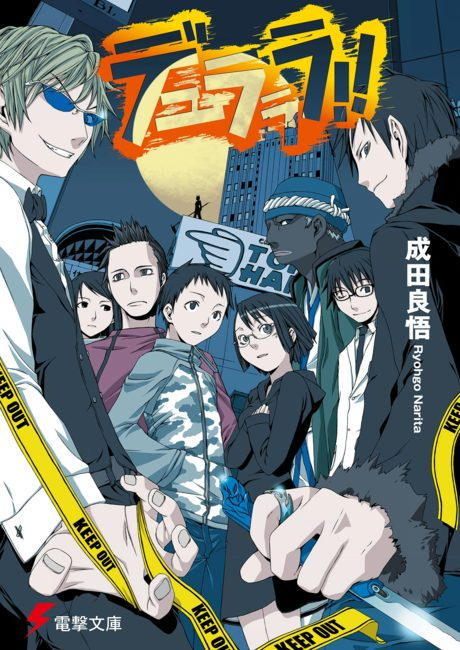

Durarara!!
デュラララ!!
The anime covers the whole light novel.
7.9AniList score
—Animeter, no votes yet
60episodes, 4 seasons
Anime finished. Where does the story go next?
StatusFully adapted
The two anime series adapt the entire 13-volume light novel series, with Durarara!!x2 Ketsu covering volumes 11 to 13. To keep going, read the sequel Durarara!! SH, which is on hiatus after four volumes.
1313
Season 1Durarara!!x2 (Sho, Ten, Ketsu)